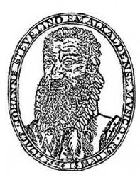

|
|
【勤作見證】 |
|
1 To worship, work, and witness, 2 Be yours the Master's purpose 3 As members of Christ's body, |
勤作見證敬拜主，要把福音廣傳， |
|
|
|
|
|
|


https://youtu.be/dn-H82_nD9k -
Wie lieblich ist der Maien · Vocal Concert Dresden, Peter Kopp & Sebastian
Knebel
https://youtu.be/JQRuoHUDs1Y
| Text: | To Worship, Work, and Witness |
| Author: | Henry Lyle Lambdin |
| Tune: | WIE LIEBLICH IST DER MAIEN |
| Composer: | Johann Steurlein |
Born: November 18, 1892, Rutledge, Tennessee.
Died: July 9, 1993, Florham Park, New Jersey.
Buried: Evergreen Cemetery, Morristown, New Jersey.
Biography
Henry was the son of Samuel Jackson Lambdin and Dorthula T. Young, and husband of Cornelia Vivian Morrow.
He was a professor of homiletics at Drew University, Madison, New Jersey.
A member of the Northern New Jersey Methodist Conference, he served as pastor of the First Methodist Church of Summit, District Superintendent, and pastor of the Morristown Methodist Church.
Publications
- Poetry and Prose (T’N’T Publications, 1989)
Tune Information
| Title: | WIE LIEBLICH IST DER MAIEN |
| Composer: | Johann Steuerlein (1575) |
| Meter: | 7.6.7.6 D |
| Incipit: | 51232 17666 51171 |
| Key: | G Major or modal |
| Source: | Himmlische Harpffe Davids |
| Copyright: | Public Domain |
| Short Name: | Johann Steuerlein |
| Full Name: | Steuerlein, Johann, 1546-1613 |
| Birth Year: | 1546 |
| Death Year: | 1613 |
Johann Steurlein (b. Schmalkalden, Thuringia, Germany, 1546; d. Meiningen, Germany, 1613)

studied law at the University of Wittenberg. From 1569 to 1589 he lived in Wasungen near Meiningen, where he served as town clerk as well as cantor and organist in the Lutheran church. From 1589 until his death he lived in Meiningen, where at various times he served as notary public, mayor, and secretary to the Elector of Saxony. A gifted poet and musician, Steurlein rhymed both the Old and New Testaments in German. A number of his hymn tunes and harmonizations were published in Geistliche Lieder (1575) and Sieben und Zwantzig Neue Geistliche Gesenge (1588).
Bert Polman
| Short Name: | Henry Lyle Lambdin |
| Full Name: | Lambdin, Henry Lyle, 1892- |
| Birth Year: | 1892 |
Lambdin, Henry Lyle. Professor of homiletics at Drew University, Madison, New Jersey. A native of Tennessee, all of his ministerial experience was in New Jersey. A member of the Northern New Jersey Methodist Conference, he served as pastor of the First Methodist Church of Summit, as District Superintendent, and a pastorate at Morristown Methodist Church.
--The Hymn Society, DNAH Archives
Notes
This tune was originally a love song composed in 1575 by Johann Steurlein (b. Schmalkalden, Thuringia, Germany, 1546; d. Meiningen, Germany, 1613) as a setting of "Mit Lieb bin ich umfangen." Steurlein studied law at the University of Wittenberg. From 1569 to 1589 he lived in Wasungen near Meiningen, where he served as town clerk as well as cantor and organist in the Lutheran church. From 1589 until his death he lived in Meiningen, where at various times he served as notary public, mayor, and secretary to the Elector of Saxony. A gifted poet and musician, Steurlein rhymed both the Old and New Testaments in German. A number of his hymn tunes and harmonizations were published in Geistliche Lieder (1575) and Sieben und Zwantzig Neue Geistliche Gesenge (l588).
His tune WIE LIEBLICH IST DER MAIEN gets its name from its original use as a setting for Martin Behm's hymn text that began with those words in 1581; text and tune were published together in Gregor Gunderreitter's David's Himlische Harpffen. The Steurlein tune was later set to Monsell's text in W. Garrett Horder's Worship Song in 1905 and popularized through the 1954 anthem by Healey Willan (PHH 258). The harmonization is by Willan, simplified from his anthem.
The tune is a rounded bar form (AABA) whose melodic variation in the fourth line sometimes confuses congregations. Use bright organ tone on that line to support the tune, but use a lighter touch on other lines. The tune can be sung in harmony by agile voices, but congregations may prefer to sing in unison.
--Psalter Hymnal Handbook, 1988